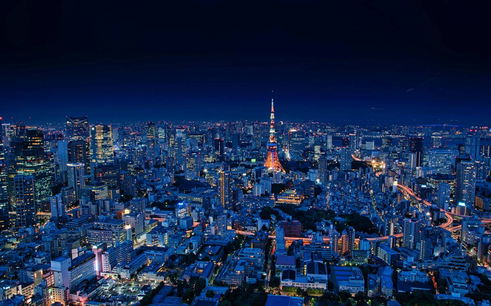

Welcome to Tokyo
Hotels
Sights
Visiting Tokyo’s landmarks is a must for anyone exploring Japan. The city blends tradition and modernity like no other place—ancient temples stand beside futuristic skyscrapers, and quiet gardens offer peace in the heart of a bustling metropolis. Iconic sights like the Tokyo Tower, Senso-ji Temple, and Shibuya Crossing showcase the city’s unique energy and culture. By discovering Tokyo’s landmarks, you experience both the history and the vibrant spirit that make this city truly unforgettable.
Learn moreEvents